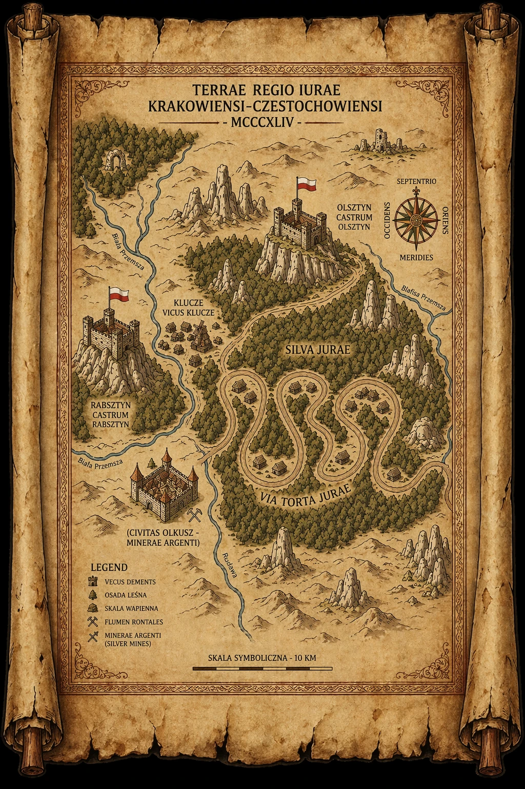

Edytor wymaga tokenu GitHub z uprawnieniem Contents: Read and Write
do repozytorium tego projektu.
Token jest przechowywany tylko w Twojej przeglądarce (localStorage) —
nie jest wysyłany nigdzie poza api.github.com.
Zaawansowane (repozytorium)
Dostępna jest nowsza wersja edytora w repozytorium. Odśwież stronę,
zanim zaczniesz edycję — jeśli banner nie zniknie, wymuś odświeżenie
(Ctrl+Shift+R).
Chatynkowo · edytor
gotowy
Podstawowe dane
Opowieść (audio)
—
Zdjęcia
Pliki trafiają do assets/img/cottages/<slug>/.
Formaty: .webp .jpg .png .gif .avif (do 10 MB każdy).
—
Treść (markdown)
Sekcje ## Jak znaleźć Chatynkę i
## Co zrobić, gdy trafisz pod chatynkę? trafiają do dymka pinezki.
Pinezka na bajkowej mapie
Kliknij w obrazek, aby umieścić pinezkę (mapX/mapY jako %).

Pinezka na rzeczywistej mapie
Kliknij albo przeciągnij pinezkę, aby ustawić lat/lng.
Skarbiec — ekran główny
Tekst widoczny u góry „Twojego Skarbca". Wstęp piszesz
w edytorze poniżej.
Nagroda (poziom)
Nagroda finałowa przyznawana
po odkryciu wszystkich Chatynek — pole „próg" jest
wtedy ignorowane. Odblokowuje też zaproszenie do Rankingu.
Kolejność poziomów w Skarbcu.
Obrazek
Kolekcjonerska ilustracja pokazywana w Skarbcu (miniatura
i podgląd nagrody). Formaty: .webp .jpg .png .gif .avif (do 10 MB).
brak obrazka
Opis (markdown)
Treść, która wcześniej była wypalona
w obrazku — teraz zwykły, edytowalny tekst.
Podgląd nagrody
Tak nagroda wygląda w Skarbcu po kliknięciu miniatury.